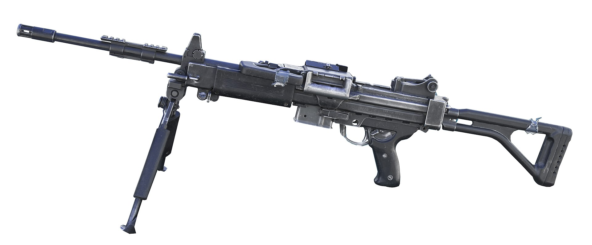

內蓋夫輕機槍

IMI內蓋夫（希伯來語：מקלע נגב，英語：NEGEV）是一種由以色列IMI製造的，用於替代在連續射擊中容易出現槍管過熱現象的5.56mm Galil ARM用的輕機槍（LMG）。這支啟發自FN Minimi的輕機槍於1985年正式開始研發，並於1997年被以色列國防軍（IDF）正式採用。
- IMI於2012推出了被以色列國防軍作為下一代制式機槍的NEGEV NG-7 7.62mm機槍。
內蓋夫是一把可靠及準確的輕機槍，有著輕型、緊湊及適合沙漠作戰的優勢，更可通過改變部件或設定來執行特別行動而不會減低火力及準確度。它空槍重7.5公斤（150發彈箱重2.1公斤），使用5.56×45公釐子彈，在1995年完成設計，於1996年實彈射擊測試，1997年裝備以色列國防軍，是以色列國防軍的制式輕機槍。
內蓋夫曾被指是FN Minimi的以色列仿製型，其實以色列曾入口FN Minimi（M249）輕機槍，但軍方較為支持本土生產的武器，因此內蓋夫是以Minimi的設計加以改良而成。以色列軍隊將此武器定位為班用機槍（Squad Assault Weapon /SAW），更被推廣為以色列國防軍（IDF）的制式輕機槍。
內蓋夫與FN Minimi相同，可以彈鏈及彈匣供彈，但彈匣口改為機匣下方，配有塑膠套的兩腳架及M1913皮卡汀尼導軌，其兩腳架更可充當前握把。後期型內蓋夫配有獨立前握把及可拆式雷射瞄準器，也可裝上短槍管，槍托摺疊時不會阻礙彈盒，設計緊湊。更可選擇射速每分鐘650至850發或每分鐘750至1000發。
內蓋夫在以色列沙漠的裝甲車及全地型車輛（ATV）上亦有裝上。內蓋夫Commando是內蓋夫的短槍管版本，只配備到少數的以色列特種部隊。內蓋夫在烏克蘭當地生產，命名為「Fort-401」並裝備烏克蘭的內務部部隊。